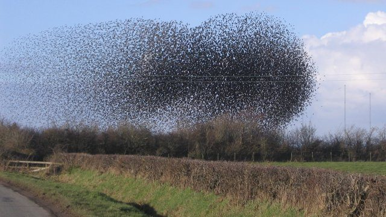

Muchos de los fenómenos que vemos a diario -un servicio público que no cambia a pesar de las reformas, una ola que recorre el estadio o un taco que aparece sin un accidente que lo explique- no se pueden entender sumando lo que quiere o hace cada persona. Esta sección reúne entradas breves sobre ese tipo de casos, pensadas para estudiantes de pregrado en ciencias sociales que nunca han leído sobre sistemas complejos. Las entradas van de lo más simple a lo más difícil, pues parten por la naturaleza y la vida cotidiana, siguen con fenómenos sociales y terminan con los problemas que enfrentan las políticas públicas.
La idea es partir por lo concreto y luego pasar a la teoría, pues cada entrada termina con un enlace a la sección «La teoría detrás», donde están los textos que explican el caso. No hace falta saber matemáticas para comenzar, si bien algunas lecturas de la segunda parte son más exigentes.
Por Fabián Belmar
Primera parte · Lo que nadie dirige
Partimos por fenómenos de la naturaleza y de la vida cotidiana, donde se ve con claridad cómo surge un orden que nadie diseñó.

Bandada de estorninos en Anthorn, Inglaterra. Foto: John Holmes, Wikimedia Commons, CC BY-SA 2.0.
EmergenciaEntrada 1
Nadie dirige a la bandada
Una bandada de estorninos puede reunir miles de aves que giran al mismo tiempo sin que ninguna de ellas dirija el movimiento. Cada pájaro solo responde a lo que hacen sus vecinos más cercanos y, sin embargo, el conjunto produce una figura que ninguno se propuso dibujar. A este tipo de fenómenos se les llama emergentes, y Steven Johnson los recorre en Sistemas emergentes a partir de hormigueros, neuronas, ciudades y programas computacionales (Johnson 2003).
La misma idea puede verse en el juego de la vida que John Conway inventó a fines de los sesenta y que Martin Gardner dio a conocer en Scientific American en octubre de 1970 (Gardner 1970). Se trata de una cuadrícula con reglas muy simples sobre cuándo una celda nace, sobrevive o muere, pero de esas reglas surgen figuras que se desplazan por la pantalla. SimCity, en tanto, llevó esta lógica a la ciudad, pues Will Wright se inspiró en los modelos urbanos de Jay Forrester para diseñarlo (Wright 1989).
En 2008 un grupo de físicos japoneses puso a 22 autos a dar vueltas en una pista circular de 230 metros, sin semáforos, obras ni accidentes que pudieran detener el tránsito. Aun así, al poco tiempo apareció un taco (Sugiyama et al. 2008). Es decir, el atasco no tenía un culpable, sino que surgía de pequeños frenazos que se amplificaban una vez que la densidad de autos superaba cierto valor, tal como ocurre en las autopistas cuando nos detenemos sin ver ningún choque más adelante.
Philip Ball dedica Masa crítica a este tipo de fenómenos y muestra cómo las herramientas de la física sirven para entender atascos, multitudes y mercados (Ball 2008). Si bien es un libro largo, no es necesario leerlo completo para entender el argumento, y su lectura conversa bien con la entrada siguiente sobre la ola del estadio.
La ola en la Copa Confederaciones 2005, Frankfurt. Foto: Wikimedia Commons, CC BY-SA 3.0.
UmbralesEntrada 3
La ola del estadio
La ola se hizo conocida durante el Mundial de México 86 y desde entonces es parte de cualquier estadio. Lo interesante es que no basta con que una persona se pare para que comience, pues se requiere que un grupo mínimo de hinchas se levante al mismo tiempo. Farkas, Helbing y Vicsek analizaron videos de catorce olas en estadios con más de 50.000 personas y mostraron que la ola se comporta como un medio excitable, donde cada espectador se suma solo si suficientes vecinos ya lo hicieron (Farkas et al. 2002).
Este es un ejemplo bastante claro de lo que Granovetter llamó modelos de umbral, es decir, situaciones en que cada persona decide sumarse a una acción colectiva según cuántos otros ya se sumaron (Granovetter 1978). La misma lógica sirve para pensar por qué algunas protestas crecen de un día para otro mientras otras, en condiciones muy parecidas, nunca despegan.
Luego pasamos a fenómenos propiamente sociales, como las redes de contactos, la segregación o la confianza.
Ilustración de una red de mundo pequeño: unos pocos atajos (en color) acortan la distancia entre cualquier par de nodos.
RedesEntrada 4
Seis grados de Kevin Bacon
A mediados de los noventa, tres estudiantes del Albright College, en Estados Unidos, inventaron un juego que consistía en unir a cualquier actor con Kevin Bacon a través de las películas que compartían. Poco después, Brett Tjaden creó en la Universidad de Virginia el Oracle of Bacon, un sitio que calcula esa distancia con bases de datos de películas y que sigue funcionando hasta hoy. Casi siempre la distancia es corta, pues Hollywood es lo que en análisis de redes se conoce como un «mundo pequeño» (Watts y Strogatz 1998).
Ricard Solé explica para un público general por qué Internet, las epidemias y el comercio comparten esta misma forma de red (Solé 2009). Para quien prefiera aprender jugando, recomiendo además The Wisdom and/or Madness of Crowds, donde en media hora se dibujan redes y se simulan contagios (Case 2018).
Para leer y jugar
Tjaden, B., et al. (s. f.). The Oracle of Bacon [Sitio web]. University of Virginia.
Algunos de los mejores recursos para enseñar complejidad no son textos sino juegos interactivos. Parable of the Polygons muestra en veinte minutos cómo preferencias individuales moderadas producen un barrio segregado, siguiendo el modelo que Schelling propuso a comienzos de los setenta (Hart y Case 2014; Schelling 1971). The Evolution of Trust, en tanto, utiliza el dilema del prisionero repetido para explicar por qué la confianza crece o se derrumba según las reglas del juego y no solo según el carácter de los jugadores (Axelrod 1984; Case 2017).
Si bien ambos están en inglés, se pueden jugar en sala sin mayor dificultad, pues el texto es breve y lo importante ocurre en la simulación. Para quien quiera seguir después de jugar, el último módulo de la segunda parte reúne NetLogo y otros programas para construir modelos propios.
Por último, vemos qué ocurre cuando alguien intenta ordenar desde arriba un sistema complejo, un problema central para las políticas públicas.
Tyrannosaurus rex, Museo Nacional de Historia Natural (Smithsonian). Foto: Quadell, Wikimedia Commons, CC BY-SA 2.0.
Cultura popularEntrada 6
Jurassic Park y la ilusión del control
En Jurassic Park, la novela de Michael Crichton (1990) que Steven Spielberg llevó al cine en 1993, el matemático Ian Malcolm anticipa que el parque fracasará. Su argumento es que nadie puede controlar del todo un sistema complejo, por más cercas eléctricas y protocolos de seguridad que se instalen. Si bien la película simplifica la teoría del caos para efectos dramáticos, la intuición de Malcolm es bastante cercana a lo que ocurre con muchas políticas públicas, pues en ambos casos lo planificado se desordena debido a interacciones que nadie previó. Las entradas que siguen tratan precisamente sobre ese problema.
Para quien quiera saber qué hay de cierto en esta intuición, recomiendo el libro de divulgación de Melanie Mitchell (2009), donde explica de dónde vienen las ideas sobre caos y complejidad y por qué todavía no existe una sola definición de sistema complejo. El curso gratuito que dicta en Complexity Explorer sigue el mismo recorrido y no exige saber matemáticas.
Para ver y leer
Spielberg, S. (Dir.). (1993). Jurassic Park [Película]. Universal Pictures. Basada en Crichton, M. (1990). Jurassic Park. Knopf.
En 1902, en medio de la tercera pandemia de peste bubónica, la administración colonial francesa en Hanoi decidió combatir a las ratas que salían de las nuevas alcantarillas del barrio francés. Para ello contrató cazadores vietnamitas y, luego, ofreció una recompensa a cualquier habitante que entregara la cola de una rata. Al poco tiempo los funcionarios comenzaron a ver ratas sin cola en la ciudad, pues la recompensa premiaba la cola y no la rata muerta (Vann 2003).
El episodio es un buen ejemplo de lo que Merton llamó consecuencias no anticipadas de la acción social intencionada (Merton 1936). Si bien la medida tenía un objetivo razonable, su diseño no consideró cómo reaccionarían las personas a las que iba dirigida, por lo que terminó creando incentivos contrarios a los que se buscaban. Lo mismo ocurre, con bastante frecuencia, en las políticas públicas contemporáneas.
El 10 de febrero de 2007 comenzó a operar por completo el Transantiago, un sistema que reemplazó los antiguos recorridos de micros por una red de troncales y alimentadores diseñada desde el Estado. Los problemas fueron inmediatos, al punto que la comisión investigadora que creó la Cámara de Diputados concluyó que una política pensada para mejorar sustancialmente el transporte terminó produciendo, en los hechos, efectos exactamente contrarios.
Las explicaciones del fracaso apuntan a problemas de información y de diseño institucional (Figueroa y Orellana 2007; Briones 2009). Si bien hay varias lecturas posibles, el caso muestra con bastante claridad lo que ocurre cuando se trata a un sistema complejo -millones de viajes diarios, operadores, usuarios y municipios que se adaptan entre sí- como si fuera un sistema complicado que se puede rediseñar desde un escritorio.
En 1973 Horst Rittel y Melvin Webber, profesores de diseño y de planificación urbana en la Universidad de California en Berkeley, distinguieron entre problemas «domesticados» y problemas «perversos» (wicked problems). Los primeros, como una partida de ajedrez, tienen una formulación clara y una solución que se puede verificar. Los segundos, en cambio, no pueden describirse de forma definitiva y sus soluciones no son correctas o incorrectas, sino mejores o peores (Rittel y Webber 1973).
Buena parte de los problemas de política pública -la pobreza, la delincuencia o el transporte de una ciudad- son de este segundo tipo. Años antes, Charles Lindblom había sostenido que los gobiernos no deciden comparando todas las alternativas posibles, sino avanzando a pequeños pasos y apoyándose en la experiencia de las decisiones anteriores, algo que llamó «salir del paso» (Lindblom 1959). Si bien esta forma de decidir suele verse como un defecto, puede ser la más razonable frente a un sistema complejo.
Los casos anteriores tienen algo en común, pues en todos ellos una intervención bien intencionada chocó con un sistema que reaccionó de formas que nadie previó. Para pensar este problema, Mario Waissbluth propone en un documento escrito para sus cursos de gestión pública en la Universidad de Chile distinguir entre sistemas complicados y sistemas complejos, y sostiene que tanto la economía de un país como una institución pública pertenecen al segundo grupo (Waissbluth 2008a). Un reloj es complicado, pues tiene muchas piezas, pero si se desarma y se vuelve a armar funciona igual. Una institución pública, en tanto, está formada por funcionarios, usuarios, gremios y autoridades que se adaptan entre sí y que reaccionan a cualquier cambio que se intente introducir, por lo que las reformas diseñadas desde arriba suelen producir resultados que nadie buscó.
Si bien el texto está pensado para directivos públicos, es una buena entrada para estudiantes de ciencias sociales, pues no exige formación matemática y sus ejemplos provienen del Estado chileno. Recomiendo leerlo junto con «Gestión del cambio en el sector público» (Waissbluth 2008b), que el propio autor presenta como su continuación y que, según advierte, carece de sentido sin la lectura previa del primero.
Para leer
Waissbluth, M. (2008a). Sistemas complejos y gestión pública. Documento de trabajo, Serie Gestión n.º 99, Departamento de Ingeniería Industrial, Universidad de Chile.
Waissbluth, M. (2008b). Gestión del cambio en el sector público. Documento de trabajo, Serie Gestión n.º 109, Departamento de Ingeniería Industrial, Universidad de Chile.
Cada módulo reúne los textos que explican uno o más de los casos anteriores. Aquí la lectura es más exigente, por lo que los recursos están ordenados desde los de entrada hasta los avanzados, y estos últimos suponen haber leído antes los primeros.
Notas
Criterios de selección
Para seleccionar los recursos privilegié textos que se puedan discutir en una clase de ciencias sociales y que no exijan formación matemática previa, si bien cada módulo incluye uno o dos más exigentes para quien quiera profundizar. Cada referencia fue verificada en la editorial, la revista o un repositorio institucional, y los enlaces apuntan a esas fuentes. La etiqueta «Acceso abierto» indica que el texto completo puede leerse de forma gratuita y legal, mientras que «En biblioteca» indica que se encuentra en bases suscritas por las universidades o disponible para préstamo.
Gran parte de los textos de la segunda parte están en inglés, pues es el idioma en que se ha desarrollado el campo. Por ello, en las entradas privilegié textos en español, varios escritos en Chile, y el módulo sobre teoría de sistemas sociales también se apoya en autores chilenos y latinoamericanos. Las fotografías provienen de Wikimedia Commons y se usan bajo las licencias que se indican en cada una.